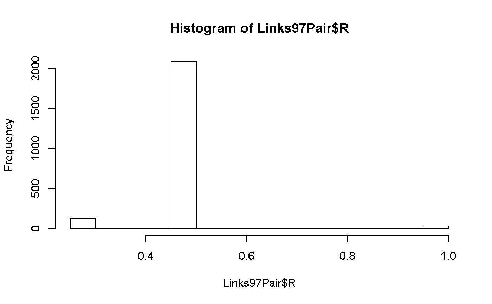

R/links-97-pair-doc.R
Links97Pair.RdThis dataset specifies the relatedness coefficient (ie, 'R') between
subjects in the same extended family. Each row represents a unique
relationship pair.
NOTE: Two variable names changed in November 2013. Subject1Tag and Subject2Tag became SubjectTag_S1 and SubjectTag_S2.
A data frame with 2,519 observations on the following 5 variables. There is one row per unique pair of subjects, irrespective of order.
ExtendedID Identity of the extended family of the pair; it corresponds to the HHID in the NLSY79. See References below.
SubjectTag_S1 Identity of the pair's first subject. See Details below.
SubjectTag_S2 Identity of the pair's second subject. See Details below.
R The pair's Relatedness coefficient. See Details below.
RelationshipPath Specifies the relationship category of the pair. This variable is a factor, with level Housemates=1.
Information comes from the Summer 2018 release of the NLSY97 sample. Data were extracted with the NLS Investigator (https://www.nlsinfo.org/investigator/).
The variable ExtendedID corresponds to the NLSY97 variable [SIDCODE]
(e.g., R11930.00),
which uniquely identifies a household that may contain multiple NLSY97 subjects.
The variables SubjectTag_S1 and SubjectTag_S2 uniquely identify
subjects. It corresponds to the NLSY97 variable [PUBID],
(e.g., R00001.00).
The RelationshipPath variable is not useful with this dataset,
but is included to be consistent with the Links97Pair dataset.
An extended family with \(k\) subjects will have \(k\)(\(k\)-1)/2 rows. Typically, Subject1 is older while Subject2 is younger.
MZ twins have R=1. DZ twins and full-siblings have R=.5.
Half-siblings have R=.25. Typical first cousins have R=.125.
Unrelated subjects have R=0 (this occasionally happens for
Housemates, but never for the other paths).
Other R coefficients are possible.
There are several other uncommon possibilities, such as half-cousins (R=.0625) and
ambiguous aunt-nieces (R=.125, which is an average of 1/4 and 0/4).
The variable coding for genetic relatedness,R, in Links79Pair contains
only the common values of R whose groups are likely to have stable estimates.
However the variable RFull in Links79PairExpanded contains all R values.
We strongly recommend using R in this base::data.frame. Move to
RFull (or some combination) only if you have a good reason, and are willing
to carefully monitor a variety of validity checks. Some of these
excluded groups are too small to be estimated reliably.
For more information on R (ie, the Relatedness coefficient), please see Rodgers, Joseph Lee, & Kohler, Hans-Peter (2005). Reformulating and simplifying the DF analysis model. Behavior Genetics, 35 (2), 211-217.
The LinksPair97 dataset contains columns necessary for a
basic BG analysis. The Links97PairExpanded dataset contains
further information that might be useful in more complicated BG analyses.
A tutorial that produces a similar dataset is http://www.nlsinfo.org/childya/nlsdocs/tutorials/linking_mothers_and_children/linking_mothers_and_children_tutorial.html. It provides examples in SAS, SPSS, and STATA.
The current dataset (ie, Links97Pair) can be saved as a CSV file
(comma-separated file) and imported into in other programs and languages.
In the R console, type the following two lines of code:
write.csv(Links97Pair, "C:/BGDirectory/Links97Pair.csv")
where "C:/BGDirectory/" is replaced by your preferred directory.
Remember to use forward slashes instead of backslashes; for instance, the
path "C:\BGDirectory\Links97Pair.csv" can be misinterpreted.
library(NlsyLinks) # Load the package into the current R session. summary(Links97Pair) # Summarize the five variables.#> ExtendedID SubjectTag_S1 SubjectTag_S2 R #> Min. : 8 Min. : 6 Min. : 7 Min. :0.2500 #> 1st Qu.:2038 1st Qu.:2402 1st Qu.:2402 1st Qu.:0.5000 #> Median :4148 Median :4939 Median :4940 Median :0.5000 #> Mean :3987 Mean :4767 Mean :4768 Mean :0.4924 #> 3rd Qu.:5991 3rd Qu.:7174 3rd Qu.:7175 3rd Qu.:0.5000 #> Max. :7477 Max. :9021 Max. :9022 Max. :1.0000 #> NA's :284 #> RelationshipPath #> Housemates:2519 #> #> #> #> #> #>#> #> 0.25 0.5 1 #> 124 2083 28#Create a dataset of only monozygotic sibs. mz_sibs <- subset(Links97Pair, R > .9) summary(mz_sibs) # Create a table MZ sibs.#> ExtendedID SubjectTag_S1 SubjectTag_S2 R RelationshipPath #> Min. : 67 Min. : 75 Min. : 76 Min. :1 Housemates:28 #> 1st Qu.:1536 1st Qu.:1788 1st Qu.:1789 1st Qu.:1 #> Median :3293 Median :3925 Median :3926 Median :1 #> Mean :3465 Mean :4145 Mean :4146 Mean :1 #> 3rd Qu.:5699 3rd Qu.:6856 3rd Qu.:6856 3rd Qu.:1 #> Max. :7282 Max. :8792 Max. :8793 Max. :1